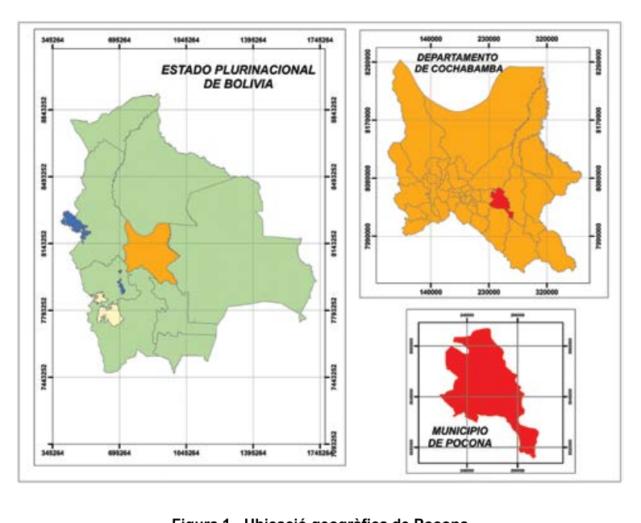
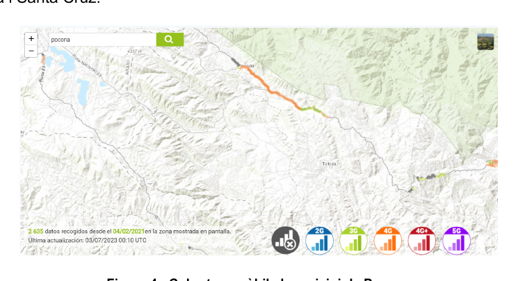
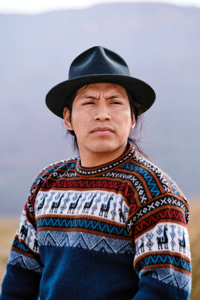
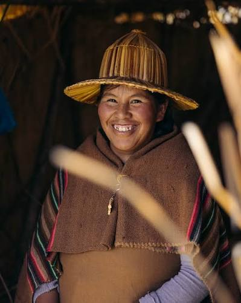
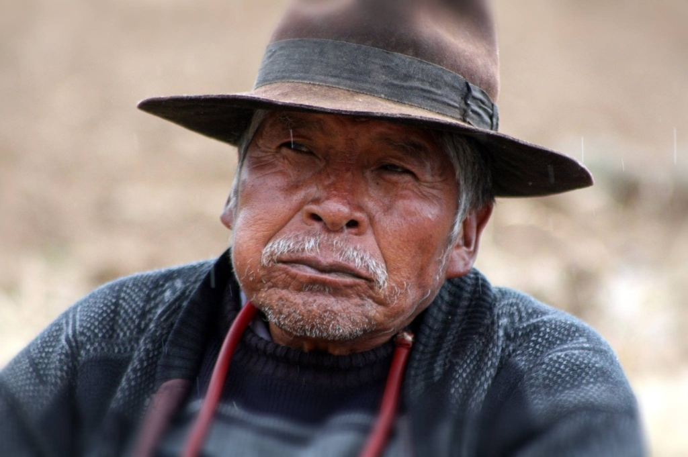

Documentació oficial de camp recopilada sobre el terreny a Bolívia. L'anàlisi exhaustiva de la geografia, orografia, divisió territorial, marc legal i impactes socioeconòmics per fonamentar el posterior disseny de l'Arbre de Problemes i la solució de telecomunicacions.
📍 Ubicació i Distància
125 km
Distància per carretera de muntanya des de la ciutat de Cochabamba.
📐 Extensió Territorial
880 km²
Superfície del municipi amb relleu abrupte andí i valls aïllades.
🏛️ Divisió Política
5 cantons
Pocona, Conda, Chillijchi, Chimboata i Huayapacha.
📶 Bretxa de Connexió
~0% rural
Cobertura mòbil pràcticament nul·la fora del tram de l'antiga carretera.
🗺️
1. Ubicació Geogràfica
Per entendre el context territorial de Pocona, primer cal situar el país en l'àmbit global. L'Estat Plurinacional de Bolívia és un país situat al centre-oest d'Amèrica del Sud, sense sortida directa al mar i caracteritzat per la transició geogràfica entre la serralada dels Andes i les conques amazònica i del Plata.
Mapa Global: Ubicació geogràfica de Bolívia al món (Amèrica del Sud). Fes clic per ampliar.
Dins de Bolívia, el Municipi de Pocona és la tercera secció municipal de la Província de Carrasco del Departament de Cochabamba i es troba a una distància de 125 quilòmetres de la capital del Departament, Cochabamba.

Figura 1: Ubicació geogràfica de Pocona dins l'Estat Plurinacional de Bolívia i el Departament de Cochabamba. Fes clic per ampliar.
Caracterització dels Pisos Ecològics de Pocona
Aquest municipi es caracteritza per la presència d'una gran diversitat de pisos ecològics condicionats pels canvis bruscos d'altitud (des dels 2.200 m fins a més de 3.600 m):
🏔️ 1. Zona d'Altitud
Situada a les cotes més elevades de la serralada. Es caracteritza per un clima fred i ventós on es produeix principalment patata de manera intensiva.
🌽 2. Zona de Valls
Cotes intermèdies amb un microclima més temperat. Es caracteritza per la producció diversificada d'hortalisses, fruiters i blat de moro.
🌴 3. Zona Tropical
Zones baixes humides on es produeixen diversos tipus de cultius, els quals no es poden comercialitzar per la falta d'un camí que els permeti un accés segur als diferents mercats.
Pis Ecològic
Climatologia i Relleu
Producció Agrícola Principal
Condicionant / Coll d'Ampolla Identificat
Zona d'Altitud
Alta muntanya (> 3.000 m), temperatures baixes, vent fort
Patata (cultiu intensiu tradicional)
Exposició a gelades i accessos pedregosos de difícil trànsit.
Zona de Valls
Microclima temperat, valls tancades entre cims
Hortalisses, arbres fruiters i blat de moro
Valls envoltades de parets de roca que bloquegen senyals de ràdio.
Figura 2: Mapa de divisió política i administrativa del municipi de Pocona, mostrant les comunitats i la xarxa hidrogràfica entre els cantons. Fes clic per ampliar.
📶
3. Accés a les Comunicacions a Bolívia
⚖️ Marc Jurídic Internacional i Nacional del Dret a la Comunicació
El 2011, l'Organització de les Nacions Unides (ONU) va declarar l’accés a les telecomunicacions com un dret humà.
En la mateixa línia, la Constitució Política de Bolívia reconeix l'accés universal i equitatiu a les telecomunicacions (Article 20).
Malgrat aquest reconeixement legal explícit, a Bolívia l’accés a internet encara és un luxe i només un 60% de la població té accés. En aquests temps, la falta d'accés a internet frena les oportunitats de desenvolupament, ja que afecta directament l'educació, el comerç i la salut, entre d'altres àmbits essencials.
Etapa Temporal
Taxa d'Accés (% Bolívia)
Context Tecnològic i Polític
Situació a l'Àrea Rural de Pocona
1995 – 2005
0,1% – 5,0%
Connexions dial-up molt lentes, circumscrites a centres governamentals i universitaris de La Paz i Santa Cruz.
Totalment inexistent (0%). Sense electricitat estable.
2006 – 2015
5,0% – 35,0%
Declaració de l'accés com a dret per l'ONU (2011) i Art. 20 Constitució de Bolívia. Desplegament inicial de 3G a capitals.
Inexistent a la vall. Cap empresa privada hi desplega xarxa.
2016 – 2024
35,0% – 60,0%
Expansió del 4G/LTE i fibra òptica a l'eix troncal urbà. Més de la meitat del país ja té connexió, però amb forta escletxa territorial.
Pocona continua estancada (< 2% a les llars), generant una greu situació d'aïllament digital.
🏔️
4. Accés a les Comunicacions a Pocona
Les zones més afectades per la falta d’accés a les telecomunicacions són les zones rurals, com Pocona. Això és degut, principalment a dos fets estructurals:
💸 1. La Lògica del Mercat Privat
Els grans operadors de telecomunicacions, com Entel, Tigo o Viva, no volen invertir en infraestructures en municipis com Pocona, ja que la relació inversió / benefici no és rendible, és a dir, han d’invertir més diners dels que trauran profit per la baixa densitat i poder adquisitiu de la població dispersa.
🏛️ 2. Limitació de Recursos de l'Estat
Segons la Llei 164, article 3, l’Estat és responsable, en tots els seus nivells de govern, de garantir els serveis de telecomunicacions. Però a la pràctica, la realitat és que no disposa de recursos econòmics suficients per poder invertir en infraestructures per a totes les àrees rurals del país.
A continuació es mostra el mapa real de cobertura mòbil del municipi de Pocona, on es pot constatar que és pràcticament nul·la, ja que només hi ha cobertura en alguns trams de la carretera antiga entre Cochabamba i Santa Cruz:

Figura 4: Mapa de cobertura mòbil cel·lular al municipi de Pocona. S'observa l'absència total de senyal al fons de les valls habitades i una cobertura molt puntual sobre la traça de l'antiga carretera. Fes clic per ampliar.
🎙️
5. Aixecament d'Informació a Terreny: Testimonis i Entrevistes Comunitàries
📋 Diagnòstic Participatiu Comunitari de l'Equip Tècnic d'Enginyeria
Per entendre la veritable dimensió de la problemàtica més enllà de les estadístiques teòriques, el nostre equip d'enginyeria i cooperació va realitzar un aixecament d'informació directa sobre el terreny mitjançant entrevistes en profunditat a veïns, mestres, agricultors i personal sanitari dels 5 cantons de Pocona. A continuació recollim els testimonis reals que evidencien com la manca d'Internet impacta en la seva supervivència, formació, economia i benestar familiar:

Don René Mamani Quispe
48 anys • Agricultor i productor de patata andina
📍 Cantó Chillijchi (Comunitat d'Altitud • 3.250 m)
PREGUNTA
«Don René, durant l'aixecament d'informació hem vist que la patata és el principal motor del cantó. Com us condiciona el dia a dia no disposar de cap mena de telefonia ni accés a Internet per vendre les vostres collites?»
RESPOSTA
Don René Mamani Quispe
«Aquí a les altures de Chillijchi ens deixem la pell a la terra, però quan arriba la collita estem completament desarmats. En no tenir connexió, no sabem quin preu es paga avui mateix al mercat de Cochabamba o de Quillacollo.
Hem d'esperar asseguts al camí que arribi algun transportista o rescatista (intermediari) amb el seu camió pel camí de terra. Com que ells saben perfectament que estem incomunicats, s'aprofiten de nosaltres: ens diuen que a la ciutat la patata no val res i ens ofereixen una misèria pel sac. I què podem fer? No tenim com trucar a un altre transportista per comparar preus ni podem coordinar la logística pel nostre compte. Ens veiem forçats a vendre per sota del cost abans que la patata es podreixi al magatzem. La manca de comunicació fa que el fruit de mesos d'esforç se'l quedi l'intermediari.»
Profa. Maritza Choque Vallejos
36 anys • Mestra i directora d'escola rural
📍 Cantó Chimboata (Unitat Educativa Comunitària)
PREGUNTA
«Professora Maritza, en revisar l'equipament educatiu de Chimboata hem comprovat que disposeu d'ordinadors. Quina és la realitat de l'aprenentatge a l'aula sense connectivitat?»
RESPOSTA
Profa. Maritza Choque
«Aquesta és la gran paradoxa de la nostra regió: l'administració ens va portar una dotzena d'ordinadors d'escriptori, però en no tenir accés a Internet són com caixes mudes o màquines d'escriure cares.
Els meus alumnes només poden fer servir programes bàsics de dibuix o documents locals. No podem obrir una pàgina interactiva de ciències, ni ensenyar-los a contrastar informació, ni consultar manuals tècnics actualitzats, ni mirar un vídeo pedagògic. Quan aquests nens acaben secundària i alguns intenten continuar formant-se a la universitat o a instituts a Cochabamba, el xoc és demolidor: se senten analfabets digitals en comparació amb els companys de capital. La manca d'Internet no és una incomoditat d'oci: és una barrera insalvable que reprodueix la pobresa d'una generació a la següent.»
Dr. Álvaro Vargas & Doña Gregoria Flores
Metge rural d'atenció primària (31 anys) & Mare de família i veïna (44 anys)
📍 Cantó Huayapacha (Posta Rural Sanitària)
PREGUNTA
«Dr. Vargas i Doña Gregoria, com s'afronta una urgència mèdica, un part complicat o un accident greu en una comunitat que es troba a desenes de quilòmetres de l'hospital?»
RESPOSTA
Dr. Álvaro Vargas

Doña Gregoria Flores
Dr. Álvaro Vargas: «La situació és d'una angoixa constant. Jo només puc fer ronda ambulatòria a Huayapacha un sol cop per setmana. El centre mèdic de referència queda a més de 30 km de distància per pistes de terra que amb pluja es converteixen en rius de fang. Si una dona té una complicació obstètrica a mitjanit o un veí pateix una intoxicació o traumatisme greu, no tenen cap manera de comunicar-se amb mi ni d'alertar una ambulància. En medicina rural, cada hora de retard pot costar una vida. Per això el nostre municipi té una esperança de vida tan baixa i una taxa de mortalitat infantil inacceptable.»
Doña Gregoria Flores: «Jo vaig viure-ho en la meva pròpia família fa tres anys. La meva cunyada va patir una hemorràgia després de parir. El meu marit va haver de córrer a peu durant dues hores en la foscor per trobar algú amb una moto que anés a demanar ajut. Quan l'ambulància va poder arribar, la meva neboda ja no respirava. Si haguéssim tingut una simple trucada o un missatge d'emergència per internet per rebre instruccions del metge i enviar el vehicle de seguida, la nena avui estaria jugant amb nosaltres.»

Don Valentín Quispe Canaviri
67 anys • Dirigent comunitari i representant de la gent gran
📍 Cantó Pocona Centre / Cantó Conda
PREGUNTA
«Don Valentín, quin impacte emocional i humà té la incomunicació sobre el teixit familiar i la despoblació dels cantons de Pocona?»
RESPOSTA
Don Valentín Quispe
«Pocona s'està quedant sense joventut. Els nostres fills, quan fan setze o divuit anys, veuen que aquí no hi ha feina tecnològica ni estudis superiors i marxen: van cap a Cochabamba, a la collita de Santa Cruz o emigren a Buenos Aires o a Espanya. I aleshores comença el nostre dol en vida.
Com que a les nostres cases no hi ha telèfon ni internet, passem mesos sencers sense saber si estan sans, si mengen calent o si tenen dificultats. Hi ha mares ancianes que caminen tres hores fins a un punt elevat de la carretera antiga només per veure si agafen una ratlla de senyal per esperar un missatge de text. Aquesta incertesa constant genera una angoixa, una tristesa i una solitud devastadora a la nostra gent gran. Sentim que el món avança a tota velocitat i nosaltres hem quedat oblidats darrere les muntanyes.»
🎯 Conclusió Tècnica de l'Aixecament de Camp
Aquest aixecament d'informació directa a la comunitat de Pocona confirma que la manca d'accés a Internet no és un problema tecnològic menor o de lleure, sinó un factor estructural crític que condiciona la vida, la supervivència dels infants, la viabilitat de l'agricultura i la continuïtat social del territori. Aquestes evidències orals i empíriques justifiquen de manera indiscutible la urgència del desplegament de la xarxa de telecomunicacions WiMAX comunitària que dissenyarem en les properes fases d'aquest projecte.